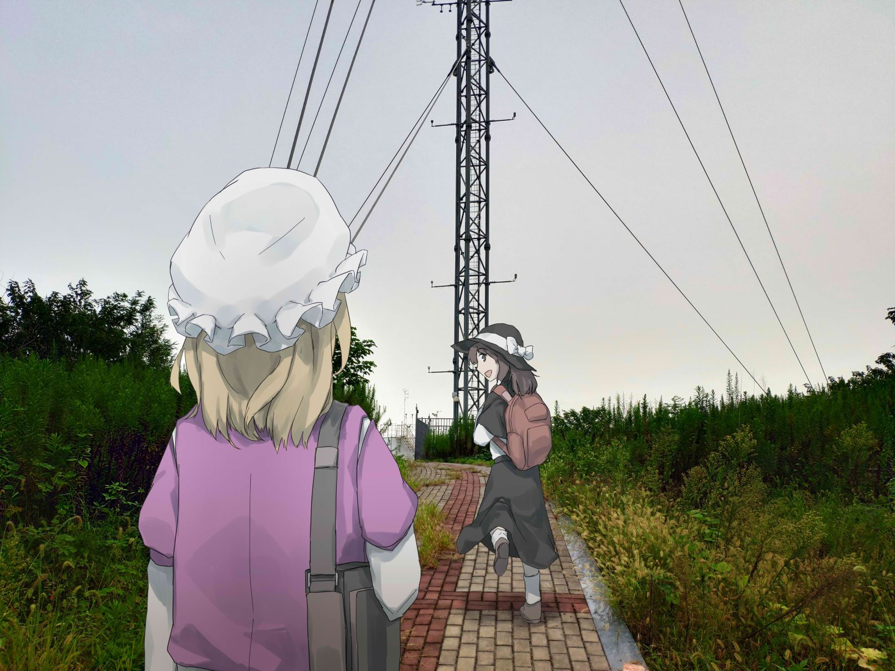

感谢你访问本网站！但如你所见，这里还是一片空白。
我的呼号是 BA4QCN，
碰巧 .cn 是中国国家顶级域名后缀，
于是我就注册了 ba4q.cn 这个域名。
目前还没想法用网站来做什么，未来可能打算写博客之类的。
为了不显得那么空旷，这里放了一张图：

摄于：大气与地球系统区域过程综合观测试验基地(SORPES)，南京大学仙林校区，2018-10-24
最后，希望与你在空中相会，VY 73!
在 若干 秒后，
本页面将自动跳转到我的 QRZ.com 主页
。
如果您没有跳转，请手动点击。